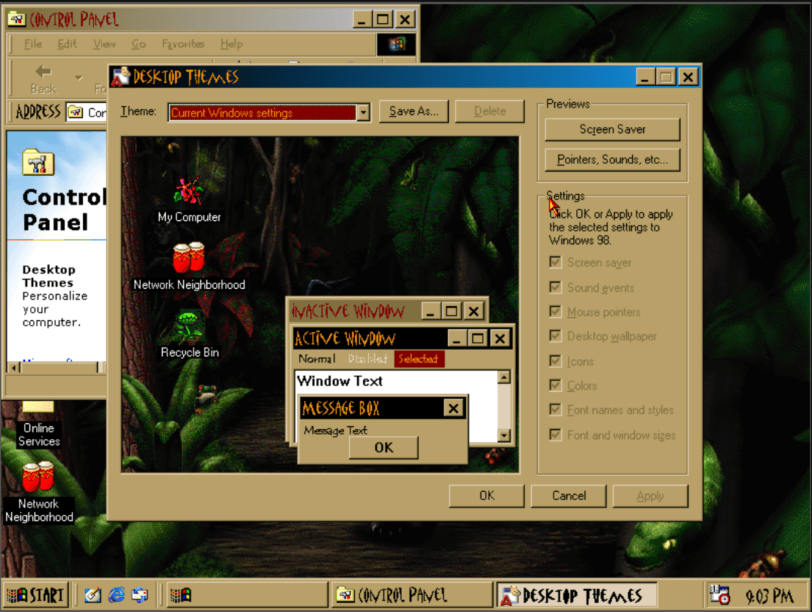

Miss Windows 98?
Don’t feel like trying to find an ancient machine or set up a Virtual Machine? You’re in luck, because you can run it in your browser. No downloads required, it just straight up runs inside of your internet browser.
I didn’t believe it myself at first, but it absolutely works. Let’s relive the magic! Show me how you customize your desktop and interface.
